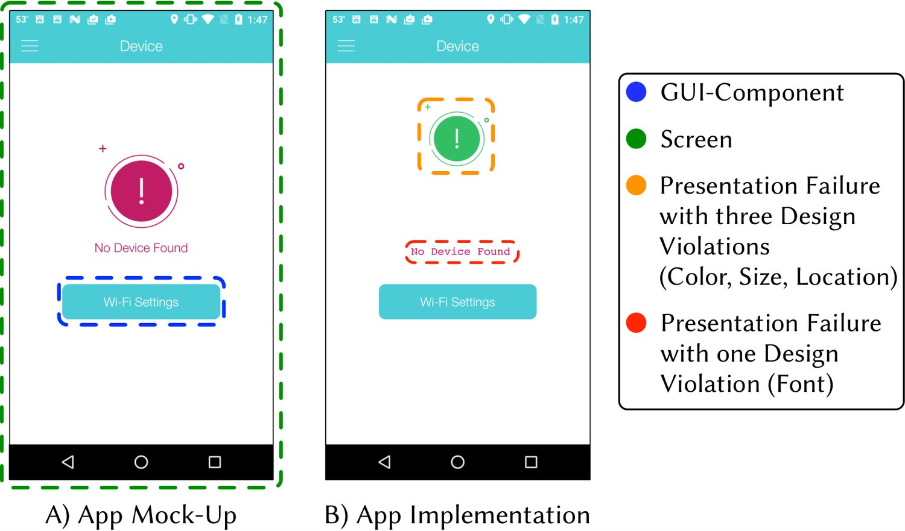
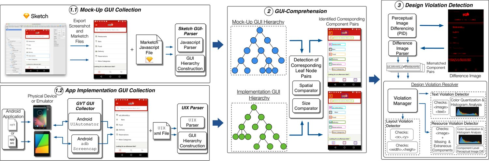

Automated Reporting of GUI Design Violations for Mobile Apps
The inception of a mobile app often takes form of a mock-up of the Graphical User Interface (GUI), represented as a static image delineating the proper layout and style of GUI widgets that satisfy requirements. Following this initial mock-up, the design artifacts are then handed off to developers whose goal is to accurately implement these GUIs and the desired functionality in code. Given the sizable abstraction gap between mock-ups and code, developers often introduce mistakes related to the GUI that can negatively impact an app’s success in highly competitive marketplaces. Moreover, such mistakes are common in the evolutionary context of rapidly changing apps. This leads to the time-consuming and laborious task of design teams verifying that each screen of an app was implemented according to intended design specifications.
This paper introduces a novel, automated approach for verifying whether the GUI of a mobile app was implemented according to its intended design. Our approach resolves GUI-related information from both implemented apps and mock-ups and uses computer vision techniques to identify common errors in the implementations of mobile GUIs. We implemented this approach for Android in a tool called Gvt and carried out both a controlled empirical evaluation with open-source apps as well as an industrial evaluation with designers and developers from Huawei. The results show that Gvt solves an important, difficult, and highly practical problem with remarkable efficiency and accuracy and is both useful and scalable from the point of view of industrial designers and developers. The tool is currently used by over one-thousand industrial designers & developers at Huawei to improve the quality of their mobile apps.
Intuitive, elegant graphical user interfaces (GUIs) embodying effective user experience (UX) and user interface (UI) design principles are essential to the success of mobile apps. In fact, one may argue that these design principles are largely responsible for launching the modern mobile platforms that have become so popular today. Apple Inc’s launch of the iPhone in 2007 revolutionized the mobile handset industry (heavily influencing derivative platforms including Android) and largely centered on an elegant, well-thought out UX experience, putting multitouch gestures and a natural GUI at the forefront of the platform experience. A decade later, the most successful mobile apps on today’s highly competitive app stores (e.g., Google Play(5) and Apple’s App Store(3)) are those that embrace this focus on ease of use, and blend intuitive user experiences with beautiful interfaces. In fact, given the high number of apps in today’s marketplaces that perform remarkably similar functions (7), the design and user experience of an app are often differentiating factors, leading to either success or failure (12).
直观、优雅的图形用户界面（GUI）承载着有效的用户体验（UX）与用户界面（UI）设计原则，是移动应用成功的关键。事实上，可以说正是这些设计原则在很大程度上催生了当今广受欢迎的现代移动平台。苹果公司 2007 年推出的 iPhone 彻底变革了手机产业（并深刻影响了包括 Android 在内的衍生平台），其核心正是一套优雅而经过深思熟虑的 UX 体验，把多点触控手势与自然的 GUI 置于平台体验的前沿。十年之后，在竞争异常激烈的今日应用商店（如 Google Play(5) 与苹果 App Store(3)）中，最成功的移动应用依然是那些紧扣易用性、把直观的用户体验与精美的界面融合在一起的应用。事实上，鉴于当今市场上功能高度相似的应用数量众多(7)，应用的设计与用户体验往往成为决定成败的差异化因素(12)。
Given the importance of a proper user interface and user experience for mobile apps, development usually begins with UI/UX design experts creating highly detailed mock-ups of app screens using one of several different prototyping techniques (44, 25). The most popular of these techniques and the focus of this paper, is referred to as mock-up driven development where a designer (or group of designers) creates pixel perfect representations of app UIs using software such as Sketch(10) or PhotoShop(1). Once the design artifacts (or mock-ups) are completed, they are handed off to development teams who are responsible for implementing the designs in code for a target platform. In order for the design envisioned by the UI/UX experts (who carry domain knowledge that front-end developers may lack) to be properly transferred to users, an accurate translation of the mock-up to code is essential.
鉴于良好的用户界面与用户体验对移动应用至关重要，开发通常始于 UI/UX 设计专家用若干原型技术之一(44, 25) 制作高度精细的应用屏幕设计稿。其中最流行、也是本文关注的一种做法被称为设计稿驱动的开发：由一名（或一组）设计师用 Sketch(10) 或 PhotoShop(1) 等软件制作像素级精确的应用 UI 表示。设计产物（即设计稿）完成之后，会交付给开发团队，由他们负责在目标平台上用代码实现这些设计。为了让 UI/UX 专家（他们掌握着前端开发者可能欠缺的领域知识）所构想的设计被准确地传递给用户，把设计稿精确翻译为代码至关重要。
Yet, implementing an intuitive and visually appealing UI in code is well-known to be a challenging undertaking (46, 37, 39). As such, many mobile development platforms such as Apple’s Xcode IDE and Android Studio include powerful built-in GUI editors. Despite the ease of use such technologies are intended to facilitate, a controlled study has illustrated that such interface builders can be difficult to operate, with users prone to introducing bugs (49). Because apps under development are prone to errors in their GUIs, this typically results in an iterative workflow where UI/UX teams will frequently manually audit app implementations during the development cycle and report any violations to the engineering team who then aims to fix them. This incredibly time consuming back-and-forth process is further complicated by several underlying challenges specific to mobile app development including: (i) continuous pressure for frequent releases (22, 24), (ii) the need to address user reviews quickly to improve app quality (40, 41, 19, 20), (iii) frequent platform updates and API instability (15, 27, 28, 33) including changes in UI/UX design paradigms inducing the need for GUI re-designs (e.g., material design), and (iv) the need for custom components and layouts to support complex design mock-ups. Thus, there is a practical need for effective automated support to improve the process of detecting and reporting design violations and providing developers with more accurate and actionable information.
然而，用代码实现直观且富有视觉吸引力的 UI，众所周知是一项颇具挑战的工作(46, 37, 39)。因此，苹果的 Xcode IDE 与 Android Studio 等许多移动开发平台都内置了强大的 GUI 编辑器。尽管这些技术本意在于提升易用性，一项受控研究却表明，这类界面构建器可能难以操作，用户容易引入缺陷(49)。由于开发中的应用其 GUI 容易出现错误，这通常导致一种迭代式工作流：UI/UX 团队会在开发周期中频繁地人工审查应用实现，并把发现的违规上报给工程团队，由后者着手修复。这一极其耗时的往复过程，还因移动应用开发特有的若干底层挑战而更加复杂，包括：(i) 频繁发版的持续压力(22, 24)；(ii) 为提升应用质量而快速响应用户评论的需要(40, 41, 19, 20)；(iii) 频繁的平台更新与 API 不稳定(15, 27, 28, 33)，其中包括 UI/UX 设计范式变化（如 material design）所引发的 GUI 重新设计需求；以及 (iv) 为支持复杂设计稿而定制组件与布局的需要。因此，业界迫切需要有效的自动化支持，以改进设计违规的检测与报告流程，并向开发者提供更准确、更具可操作性的信息。
The difficulty that developers experience in creating effective GUIs stems from the need to manually bridge a staggering abstraction gap that involves reasoning concise and accurate UI code from pixel-based graphical representations of GUIs. The GUI errors that are introduced when attempting to bridge this gap are known in literature as presentation failures. Presentation failures have been defined in the context of web applications in previous work as “a discrepancy between the actual appearance of a webpage [or mobile app screen] and its intended appearance" (32). We take previous innovative work that aims to detect presentation errors in web applications (31, 32, 42, 18) as motivation to design equally effective approaches in the domain of mobile apps. Presentation failures are typically comprised of several visual symptoms or specific mismatches between visual facets of the intended GUI design and the implementation of those GUI-components (32) in an app. These visual symptoms can vary in type and frequency depending on the domain (e.g., web vs. mobile), and in the context of mock-up driven development, we define them as design violations.
开发者在创建有效 GUI 时遭遇的困难，源于他们必须手工跨越一道惊人的抽象鸿沟——从基于像素的 GUI 图形表示推导出简洁而准确的 UI 代码。在尝试跨越这道鸿沟时引入的 GUI 错误，在文献中被称为呈现失效（presentation failure）。已有工作在 Web 应用的语境下把呈现失效定义为「网页[或移动应用屏幕]的实际外观与其预期外观之间的偏差」(32)。我们把以往旨在检测 Web 应用中呈现错误的开创性工作(31, 32, 42, 18) 作为动机，设计出在移动应用领域同样有效的方法。呈现失效通常由若干视觉症状构成，即预期 GUI 设计与应用中这些 GUI 组件实现(32) 之间在特定视觉侧面上的具体不匹配。这些视觉症状的类型与出现频率会因领域（如 Web 与移动）而异；在设计稿驱动的开发中，我们把它们定义为设计违规。
In this paper, we present an approach, called Gvt (Gui Verification sysTem), developed in close collaboration with Huawei. Our approach is capable of automated, precise reporting of the design violations that induce presentation failures between an app mock-up and its implementation. Our technique decodes the hierarchal structure present in both mockups and dynamic representations of app GUIs, effectively matching the corresponding components. Gvt then uses a combination of computer vision techniques to accurately detect design violations. Finally, Gvt constructs a report containing screenshots, links to static code information (if code is provided ), and precise descriptions of design violations. GVT was developed to be practical and scalable, was built in close collaboration with the UI/UX teams at Huawei, and is currently in use by over one-thousand designers and engineers at the company.
本文提出一种与华为紧密合作开发的方法，称为 Gvt（Gui Verification sysTem）。我们的方法能够自动、精确地报告导致应用设计稿与其实现之间出现呈现失效的设计违规。该技术解析设计稿与应用 GUI 动态表示中存在的层次结构，有效地把对应组件匹配起来。随后，Gvt 组合运用计算机视觉技术来准确检测设计违规。最后，Gvt 生成一份报告，其中包含屏幕截图、指向静态代码信息的链接（若提供代码）以及对设计违规的精确描述。GVT 的设计目标是实用且可扩展，它在与华为 UI/UX 团队的密切协作中构建，目前已被公司超过一千名设计师与工程师使用。
To evaluate the performance and usefulness of Gvt we conducted three complementary studies. First, we empirically validated Gvt’s performance by measuring the precision and recall of detecting synthetically injected design violations in popular open source apps. Second, we conducted a user study to measure the usefulness of our tool, comparing Gvt’s ability to detect and report design violations to the ability of developers, while also measuring the perceived utility of Gvt reports. Finally, to measure the applicability of our approach in an industrial context, we present the results of an industrial case study including: (i) findings from a survey sent to industrial developers and designers who use Gvt in their development workflow and (ii) semi-structured interviews with both design and development team managers about the impact of the tool. Our findings from this wide-ranging evaluation include the following key points: (i) In our study using synthetic violations Gvt is able to detect design violations with an overall precision of 98% and recall of 96%; (ii) Gvt is able to outperform developers with Android development experience in identifying design violations while taking less time; (iii) developers generally found Gvt’s reports useful for quickly identifying different types of design violations; and (iv) Gvt had a meaningful impact on the design and development of mobile apps for our industrial partner, contributing to increased UI/UX quality.
为评估 Gvt 的性能与实用性，我们开展了三项互补的研究。第一，我们通过测量在流行开源应用中检测人为注入的设计违规时的精确率与召回率，对 Gvt 的性能做了实证验证。第二，我们开展了一项用户研究来衡量工具的实用性，把 Gvt 检测与报告设计违规的能力同开发者的能力作比较，同时测量 Gvt 报告的感知效用。最后，为衡量本方法在工业情境下的适用性，我们给出一项工业案例研究的结果，其中包括：(i) 面向在日常开发流程中使用 Gvt 的工业开发者与设计师的调查发现；(ii) 与设计团队和开发团队管理者就工具影响进行的半结构化访谈。这项覆盖面广泛的评估得到以下关键结论：(i) 在使用合成违规的研究中，Gvt 检测设计违规的总体精确率达 98%、召回率达 96%；(ii) Gvt 在识别设计违规上能够胜过具有 Android 开发经验的开发者，且耗时更少；(iii) 开发者普遍认为 Gvt 的报告有助于快速识别不同类型的设计违规；(iv) Gvt 对工业合作方移动应用的设计与开发产生了切实影响，推动了 UI/UX 质量的提升。
Our paper contributions can be summarized as follows:
本文的贡献可概括如下：
We formalize the concepts of presentation failures and design violations for mock-up driven development in the domain of mobile apps, and empirically derive common types of design violations in a study on an industrial dataset;
• 我们在移动应用领域对设计稿驱动开发中的呈现失效与设计违规概念做了形式化，并在一项基于工业数据集的研究中经验性地归纳出常见类型的设计违规；
We present a novel approach for detecting and reporting these violations embodied in a tool called Gvt that uses hierarchal representations of an app’s GUI and computer vision techniques to detect and accurately report design violations;
• 我们提出一种检测并报告这类违规的新方法，体现在名为 Gvt 的工具中：它利用应用 GUI 的层次化表示与计算机视觉技术来检测并准确报告设计违规；
We conduct a wide-ranging evaluation of the Gvt studying its performance, usefulness, and industrial applicability;
• 我们对 Gvt 开展了覆盖面广泛的评估，考察其性能、实用性与工业适用性；
We include an online appendix (35) with examples of reports generated by Gvt and our evaluation dataset. Additionally, we make the Gvt tool and code available upon request.
• 我们提供一份在线附录(35)，其中包含 Gvt 生成的报告示例与我们的评估数据集。此外，Gvt 工具与代码可按请求提供。
In this section we formalize the problem of detecting design violations in GUIs of mobile apps and discuss the origin of the problem rooted in industrial mobile app design & development.
本节对移动应用 GUI 中设计违规检测的问题做形式化，并讨论植根于工业界移动应用设计与开发的这一问题起源。
At a high level, our goal is to develop an automated approach capable of detecting, classifying, and accurately describing design violations that exist for a single screen of a mobile app to help developers resolve presentation failures more effectively. In this section we formalize this scenario in order to allow for an accurate description and scope of our proposed approach. While this section focuses on concepts, Sec. 4 focuses on the implementation details.
总体而言，我们的目标是开发一种自动化方法，能够检测、分类并准确描述移动应用单个屏幕上存在的设计违规，从而帮助开发者更有效地消除呈现失效。本节对这一场景做形式化，以便准确描述我们提出的方法并界定其范围。本节聚焦概念，第 4 节聚焦实现细节。
There are two main logical constructs that define the concept of the GUI of an app: GUI-components (or GUI-widgets) and Screens. A GUI-component is a discrete object with a set of attributes (such as size and location among others) associated with a particular Screen of an app. A Screen is an invisible canvas of size corresponding to the physical screen dimensions of a mobile device. We define two types of screens, those created by designers using professional-grade tools like Sketch, and those collected from implemented apps at runtime. Each of these two types of Screens has an associated set of GUI-components (or components). Each set of components associated with a screen is structured as a cumulative hierarchy comprising a tree structure, starting with a single root node, where the spatial layout of parent always encompasses contained child components.
定义应用 GUI 概念的逻辑构造主要有两类：GUI 组件（或 GUI 控件）与屏幕。GUI 组件是一个离散对象，带有一组属性（如尺寸与位置等），并关联到应用的某个特定屏幕。屏幕是一块不可见的画布，其尺寸对应于移动设备的物理屏幕尺寸。我们定义两类屏幕：一类由设计师用 Sketch 等专业级工具创建，另一类在运行时从已实现的应用中采集。这两类屏幕各自关联一组 GUI 组件（简称组件）。与屏幕关联的每组组件都被组织为一个累积层次结构，构成树形结构，从单一根节点开始，父组件的空间布局始终包含其所含的子组件。
Definition 1: GUI-Component (GC) - A discrete object with a corresponding set of attributes which can be represented as a four-tuple in the form (<x-position,y-position>, <height,width>, <text>, <image>). Here the first four elements of the tuple describe the location of the top left point for the bounding box of the component, and the height and width attributes describe the size of the bounding box. The text attribute corresponds to text displayed by the component and the image attribute represents an image of the component with bounds adhering to the first two attributes.
定义 1：GUI 组件（GC）——一个离散对象 ，带有一组对应属性 ，可表示为一个四元组，形式为（<x 坐标,y 坐标>, <高度,宽度>, <文本>, <图像>）。其中元组的前四个元素描述该组件边界框左上点的位置，高度与宽度属性描述边界框的尺寸。文本属性对应组件所显示的文本，图像属性表示组件的图像，其边界遵循前两个属性。
Definition 2: Screen (S) - A canvas with a predefined height and width corresponding to the physical display dimensions of a smartphone or tablet. Each Screen contains a cumulative hierarchy of components, which can be represented as a nested set such that:
定义 2：屏幕（S）——一块画布 ，具有与智能手机或平板电脑物理显示尺寸相对应的预定义高度与宽度。每个屏幕包含组件的累积层次结构，可表示为一个嵌套集合，使得：
| (1) |
where each has a unique attribute tuple and the nested set can be ordered in either depth-first (Exp. 1) or in a breadth-first manner. We are concerned with two specific types of screens: screens representing mock-ups of mobile apps and screens representing real implementations of these apps, or .
其中每个 都有唯一的属性元组，该嵌套集合可按深度优先（例 1）或广度优先的方式排序。我们关注两类特定的屏幕：表示移动应用设计稿的屏幕 ，以及表示这些应用真实实现的屏幕，即 。

图 1. 形式化定义示例
As described earlier, design violations correspond to visual symptoms of presentation failures, or differences between the intended design and implementation of a mobile app screen. Presentation failures can be made up of one or more design violations of different types.
如前所述，设计违规对应呈现失效的视觉症状，即移动应用屏幕的预期设计与实现之间的差异。呈现失效可由一个或多个不同类型的设计违规构成。
Definition 3: Design Violation (DV) - As shown in Exp. 2, a mismatch between the attribute tuples of two corresponding leaf-level (i.e., having no direct children) GUI-components and of two screens and imply a design violation DV associated with those components. In this definition leaf nodes correspond to one another if their location and size on a screen (i.e., <x-position,y-position>, <height,width>) match within a given threshold. Equality between leaf nodes is measured as a tighter matching threshold across all attributes. As we illustrate in the next section, inequalities between different attributes in the associated tuples of the GCs lead to different types of design violations.
定义 3：设计违规（DV）——如例 2 所示，两个对应的叶级（即没有直接子节点）GUI 组件 与 ——它们分别位于两个屏幕 与 中——的属性元组之间若存在不匹配，则意味着与这些组件相关的一个设计违规 DV。在该定义中，若叶节点在屏幕上的位置与尺寸（即 <x 坐标,y 坐标>、<高度,宽度>）在给定阈值内吻合，则二者相互对应。叶节点之间的相等性则通过在所有属性上使用更严格的匹配阈值来度量。正如我们在下一节所说明的，GC 关联元组中不同属性之间的不等关系会导致不同类型的设计违规。
| (2) | |||
Definition 4: Presentation Failure (PF) - A set of one or more DVs attributed to a set of corresponding GUI-components between two screens and , as shown in Exp. 3. For instance, as shown in Fig. 1, a single set of corresponding components may have differences in both the <x,y> and <height,width> attributes leading to two constituent design violations that induce a single presentation failure PF. Thus, each presentation failure between two Screens corresponds to at least one mismatch between the attribute vectors of two corresponding leaf node GUI-components and .
定义 4：呈现失效（PF）——归属于两个屏幕 与 之间一组对应 GUI 组件的一个或多个 DV 的集合，如例 3 所示。例如，如图 1 所示，一组对应组件可能同时在 <x,y> 与 <高度,宽度> 属性上存在差异，从而产生两个构成性的设计违规，共同导致一次呈现失效 PF。因此，两个屏幕 之间的每一次呈现失效，都对应两个对应叶节点 GUI 组件 与 的属性向量之间至少一处不匹配。
| (3) | |||
Given these definitions, the problem being solved in this paper is the following: Given two screens and corresponding to the mock-up and implementation screens of a mobile application, we aim to detect and describe the set of presentation failures . Thus, we aim to report all design violations on corresponding GC pairs:
基于这些定义，本文所解决的问题如下：给定对应于某个移动应用设计稿屏幕与实现屏幕的两个屏幕 与 ，我们的目标是检测并描述呈现失效集合 。也就是说，我们旨在报告所有对应 GC 对上的设计违规：
| (4) | |||
A typical industrial mobile development process includes the following steps (as confirmed by our collaborators at Huawei): (i) First a team of designers creates highly detailed mockups of an app’s screens using the Sketch (10) (or similar) prototyping software. These mock-ups are typically “pixel-perfect" representations of the app for a given screen dimension; (ii) The mock-ups are then handed off to developers in the form of exported images with designer added annotations stipulating spatial information and constraints. Developers use this information to implement representations of the GUIs for Android using a combination of Java and xml; (iii) Next, after the initial version of the app has been implemented, compiled Android Application Package(s) (i.e., apks) are sent back to the designers who then install these apps on target devices, generate screenshots for the screens in question, and manually search for discrepancies compared to the original mock-ups; (iv) Once the set of violations are identified, these are communicated back to the developers via textual descriptions and annotated screenshots at the cost of significant manual effort from the design teams. Developers must then identify and resolve the DVs using this information. The process is often repeated in several iterations causing substantial delays in the development process.
典型的工业移动开发流程包含以下步骤（已由我们在华为的合作者确认）：(i) 首先，设计团队用 Sketch(10)（或类似）原型软件制作应用屏幕的高度精细设计稿。这些设计稿通常是应用在给定屏幕尺寸下的「像素级精确」表示；(ii) 随后，设计稿以导出图像的形式交付给开发者，并附有设计师添加的标注，用以规定空间信息与约束。开发者利用这些信息，结合 Java 与 xml 实现面向 Android 的 GUI 表示；(iii) 接着，在应用的初始版本实现完成后，编译好的 Android 应用包（即 apk）被送回设计师手中，设计师把这些应用安装到目标设备上，对相关屏幕生成截图，并人工查找与原始设计稿的偏差；(iv) 一旦确定了违规集合，设计团队就要付出大量人工劳动，通过文字描述与带标注的截图把这些违规反馈给开发者。开发者再依据这些信息定位并消除这些 DV。该过程往往要反复多轮，导致开发流程出现实质性延误。
The goal of our work is to drastically improve this iterative process by: (i) automating the identification of DVs on the screens of mobile apps - saving both the design and development teams time and effort, and (ii) providing highly accurate information to the developers regarding these DVs in the form of detailed reports - in order to reduce their effort in resolving the problem.
我们工作的目标是通过以下方式大幅改进这一迭代过程：(i) 自动识别移动应用屏幕上的 DV——为设计与开发团队节省时间与精力；(ii) 以详细报告的形式向开发者提供关于这些 DV 的高度准确信息——以降低他们解决问题的成本。
In order to gain a better understanding of the types of DVs that occur in mobile apps in practice, we conducted a study using a dataset from Huawei. While there do exist a small collection of taxonomies related to visual GUI defects (26, 23) and faults in mobile apps (21, 29), we chose to conduct a contextualized study with our industrial partner for the following reasons: (i) existing taxonomies for visual GUI defects were not detailed enough, containing only general faults (e.g., “incorrect appearance”), (ii) existing fault taxonomies for mobile apps either did not contain visual GUI faults or were not complete, and (iii) we wanted to derive a contextualized DV taxonomy for apps developed at Huawei. The findings from this study underscore the existence and importance of the problem that our approach aims to solve in this context. Due to an NDA, we are not able to share the dataset or highlight specific examples, in order to avoid revealing information about future products at Huawei. However, we present aggregate results in this section.
为了更好地理解实践中移动应用出现的 DV 类型，我们基于华为的一个数据集开展了一项研究。虽然确实存在少量与视觉 GUI 缺陷(26, 23) 以及移动应用故障(21, 29) 相关的分类体系，我们仍选择与工业合作方开展一项情境化研究，原因如下：(i) 现有的视觉 GUI 缺陷分类体系不够细致，只包含一般性故障（如「外观不正确」）；(ii) 现有的移动应用故障分类体系要么不包含视觉 GUI 故障，要么并不完备；(iii) 我们希望为华为开发的应用归纳出一套情境化的 DV 分类体系。这项研究的发现凸显了本方法力求解决的问题在这一情境下的存在性与重要性。由于保密协议（NDA）的限制，我们不能共享该数据集或展示具体示例，以免泄露华为未来产品的信息。不过，我们在本节给出聚合结果。
The goal of this study is to derive a taxonomy of the different types of DVs and examine the distribution of these types induced during the mobile app development process. The context of this study is comprised of a set of 71 representative mobile app mock-up and implementation screen pairs from more than 12 different internal apps, annotated by design teams from our industrial partner to highlight specific instances of resolved DVs. This set of screen pairs was specifically selected by the industrial design team to be representative both in terms of diversity and distribution of violations that typically occur during the development process.
本研究的目标是归纳出不同类型 DV 的分类体系，并考察这些类型在移动应用开发过程中引发违规的分布情况。本研究的语境由来自 12 个以上不同内部应用的 71 组具有代表性的移动应用设计稿与实现屏幕对构成，这些屏幕对由工业合作方的设计团队标注，用以突出已修复 DV 的具体实例。这组屏幕对由工业设计团队专门挑选，在开发过程中典型出现的违规多样性与分布上都具有代表性。
In order to develop a taxonomy and distribution of the violations present in this dataset, we implement an open coding methodology consistent with constructivist grounded theory (17). Following the advice of recent work within the SE community (45), we stipulate our specific implementation of this type of grounded theory while discussing our deviations from the methods in the literature. We derived our implementation from the material discussed in (17) involving the following steps: (i) establishing a research problem and questions, (ii) data-collection and initial coding, and (iii) focused coding. We excluded other steps described in (17), such as memoing because we were building a taxonomy of labels, and seeking new specific data due to our NDA limiting the data that could be shared. The study addressed the following research question: What are the different types and distributions of GUI design violations that occur during industrial mobile app development processes?
为了建立该数据集中所存在违规的分类体系与分布，我们采用了与建构主义扎根理论(17) 相一致的开放性编码方法。遵循软件工程社区近期工作(45) 的建议，我们在讨论与文献方法偏离之处的同时，明确了我们对这类扎根理论的具体实现。我们的实现源自(17) 中讨论的材料，包含以下步骤：(i) 确立研究问题与疑问；(ii) 数据收集与初始编码；(iii) 聚焦编码。我们省略了(17) 中描述的其他步骤，例如备忘录撰写（因为我们构建的是标签分类体系），以及寻求新的特定数据（因为 NDA 限制了可共享的数据）。该研究回答以下研究问题：在工业移动应用开发过程中出现的 GUI 设计违规有哪些不同类型与分布？
图 2. 不同类型工业 DV 的分布
During the initial coding process, three of the authors were sent the full set of 71 screen pairs and were asked to code four pieces of information for each example: (i) a general category for the violation, (ii) a specific description of the violation, (iii) the severity of the violation (if applicable), and (iv) the Android GC types affected (e.g., button). Finally, we performed a second round of coding that combined the concepts of focused and axial coding as described in (17). During this round two of the authors merged the responses from all three types of coding information where at least two of the three coders agreed. During this phase similar coding labels were merged (e.g., “layout violation" vs. “spatial violation"), conflicts were resolved, two screen pairs were discarded due to ambiguity, and cohesive categories and subcategories were formed. The author agreement for each of the four types of tags is as follows: (i) general violation category (100%), (ii) specific violation description (96%), (iii) violation severity (100%), and (iv) affected GC types (84.5%).
在初始编码过程中，三位作者收到了完整的 71 组屏幕对，并被要求为每个示例编码四项信息：(i) 违规的一般类别；(ii) 违规的具体描述；(iii) 违规的严重程度（若适用）；(iv) 受影响的 Android GC 类型（如按钮）。最后，我们进行了第二轮编码，融合了(17) 中所述的聚焦编码与轴心编码概念。在这一轮中，两位作者合并了三类编码信息中至少两位编码者达成一致的部分。在此阶段，相似的编码标签被合并（如「布局违规」与「空间违规」），冲突得到解决，两组因歧义而被舍弃的屏幕对被剔除，并形成了具有内聚性的类别与子类别。四类标签的作者一致率分别为：(i) 一般违规类别（100%）、(ii) 具体违规描述（96%）、(iii) 违规严重程度（100%）、(iv) 受影响的 GC 类型（84.5%）。
Our study revealed three major categories of design violations, each with several specific subtypes. We forgo detailed descriptions and examples of violations due to space limitations, but provide examples in our online appendix (35). The derived categories and subcategories of DVs, and their distributions, are illustrated in Fig. 2. Overall 82 DVs were identified across the 71 unique screen pairs considered in our study. The most prevalent category of DVs in our taxonomy are Layout Violations (), which concern either a translation of a component in the x or y direction or a change in the component size, with translations being more common. The second most prevalent category () consists of Resource Violations, which concern missing components, extra components, color differences, and image differences. Finally, about one-quarter () of these violations are Text Violations, which concern differences in components that display text. We observed that violations typically only surfaced for “leaf-level" components in the GUI hierarchy. That is, violations typically only affected atomic components & not containers or backgrounds. Only 5/82 of examined violations () affected backgrounds or containers. Even in these few cases, the violations also affected “leaf-level" components.
我们的研究揭示了三大类设计违规，每一类下又有若干具体子类型。受篇幅所限，我们省略违规的详细描述与示例，但在在线附录(35) 中提供了示例。所归纳的 DV 类别、子类别及其分布如图 2 所示。在我们研究考察的 71 组唯一屏幕对中，总共识别出 82 个 DV。本分类体系中最常见的 DV 类别是布局违规（），它涉及组件在 x 或 y 方向上的平移或组件尺寸的变化，其中平移更为常见。第二常见的类别（）是资源违规，涉及组件缺失、组件多余、颜色差异与图像差异。最后，约有四分之一（）的违规属于文本违规，涉及显示文本的组件之间的差异。我们观察到，违规通常只出现在 GUI 层次结构中的「叶级」组件上，也就是说，违规通常只影响原子组件，而不影响容器或背景。在所考察的违规中，只有 5/82（）影响背景或容器。即便在这少数情形中，违规同时也影响到了「叶级」组件。
The different types of violations correspond to different inequalities between the attribute tuples of corresponding GUI-components defined in Sec. 2. This taxonomy shows that designers are charged with identifying several different types of design violations, a daunting task, particularly for hundreds of screens across several apps.
不同类型的违规对应于第 2 节所定义的对应 GUI 组件属性元组之间的不同不等关系。这一分类体系表明，设计师肩负着识别多种不同类型设计违规的任务，这是一项令人生畏的工作，尤其是当要面对多个应用中的数百个屏幕时。

图 3. GVT 工作流概览
The workflow of Gvt (Fig. 3) proceeds in three stages: First in the GUI-Collection Stage, GUI-related information from both mock-ups and running apps is collected; Next, in the GUI-Comprehension Stage leaf-level GCs are parsed from the trees and a KNN-based algorithm is used to match corresponding GCs using spatial information; Finally, in the Design Violation Detection Stage DVs are detected using a combination of methods that leverage spatial GC information and computer vision techniques.
Gvt 的工作流（图 3）分为三个阶段：首先是 GUI 采集阶段，从设计稿与运行中的应用采集 GUI 相关信息；其次是 GUI 理解阶段，从树中解析出叶级 GC，并用基于 KNN 的算法依据空间信息匹配对应的 GC；最后是设计违规检测阶段，综合使用借助 GC 空间信息的方法与计算机视觉技术来检测 DV。
Software UI/UX design professionals typically use professional-grade image editing software (such as Photoshop(1) or Sketch(10)) to create their mock-ups. Designers employed by our industrial partner utilize the Sketch design software. Sketch is popular among mobile UI/UX designers due to its simple but powerful features, ease of use, and large library of extensions (11). When using these tools designers often construct graphical representations of smartphone applications by placing objects representing GCs (which we refer to as mock-up GCs) on a canvas (representing a Screen S) that matches the typical display size of a target device. In order to capture information encoded in these mock-ups we decided to leverage an export format that was already in use by our industrial partner, an open-source Sketch extension called Marketch (6) that exports mock-ups as an html page including a screenshot and JavaScript file.
软件 UI/UX 设计专业人员通常使用专业级图像编辑软件（如 Photoshop(1) 或 Sketch(10)）来制作设计稿。我们工业合作方雇用的设计师使用 Sketch 设计软件。Sketch 在移动 UI/UX 设计师中颇受欢迎，原因在于其简洁而强大的功能、易用性以及庞大的扩展库(11)。使用这些工具时，设计师通常把代表 GC 的对象（我们称之为设计稿 GC）放置在画布（代表屏幕 S）上，画布尺寸与目标设备的典型显示尺寸相匹配，由此构建智能手机应用的图形表示。为捕获编码在这些设计稿中的信息，我们决定利用工业合作方已在使用的一种导出格式——一个名为 Marketch(6) 的开源 Sketch 扩展，它把设计稿导出为一个包含截图与 JavaScript 文件的 html 页面。
Thus, as input from the mock-up, Gvt receives a screenshot (to be used later in the Design Violation Detection Phase) and a directory containing the Marketch information. The JavaScript file contains several pieces of information for each mock-up GC including, (i) the location of the mock-up GC on the canvas, (ii) size of the bounding box, and (iii) the text/font displayed by the mock-up GC (if any). As shown in Figure 3-, we built a parser to read this information. However, it should be noted that our approach is not tightly coupled to Sketch or Marketch files.11 1 Similar information regarding mock-up GCs can be parsed from the html or Scalable Vector Graphics (.svg) format exported by other tools such as Photoshop(1). After the Marketch files have been parsed, Gvt examines the extracted spatial information to build a GC hierarchy. The result can be logically represented as a rooted tree where leaf nodes contain the atomic UI-elements with which a typical user might interact. Non-leaf node components typically represent containers, that form logical groupings of leaf node components and other containers. In certain cases, our approximation of using mock-up GCs to represent implementation GCs may not hold. For instance, an icon which should be represented as a single GC may consist of several mock-up GCs representing parts of the icon. Gvt handles such cases in the GUI-Comprehension stage.
因此，作为来自设计稿的输入，Gvt 接收一张截图（将在设计违规检测阶段使用）和一个包含 Marketch 信息的目录。JavaScript 文件包含每个设计稿 GC 的若干信息，包括：(i) 设计稿 GC 在画布上的位置；(ii) 边界框尺寸；(iii) 设计稿 GC 所显示的文本/字体（若有）。如图 3- 所示，我们构建了一个解析器来读取这些信息。但需要说明的是，我们的方法并不与 Sketch 或 Marketch 文件紧耦合（关于设计稿 GC 的类似信息，也可以从 Photoshop(1) 等其他工具导出的 html 或可缩放矢量图形（.svg）格式中解析得到）。Marketch 文件解析完成后，Gvt 检查提取出的空间信息以构建 GC 层次结构。其结果在逻辑上可表示为一棵有根树，其中叶节点包含典型用户可能与之交互的原子 UI 元素。非叶节点组件通常表示容器，构成叶节点组件与其他容器的逻辑分组。在某些情况下，我们用设计稿 GC 表示实现 GC 的近似可能并不成立。例如，本应表示为单个 GC 的一个图标，可能由若干表示该图标各部分的设计稿 GC 组成。Gvt 在 GUI 理解阶段处理这类情况。
In order to compare the the mock-up of an app to its implementation Gvt must extract GUI-related meta-data from a running Android app. Gvt is able to use Android’s uiautomator framework (2) intended for UI testing to capture xml files and screenshots for a target screen of an app running on a physical device or emulator. Each uiautomator file contains information related to the runtime GUI-hierarchy of the target app, including the following attributes utilized by Gvt: (i) The Android component type (e.g., android.widget.ImageButton), (ii) the location on the screen, (iii) the size of the bounding box, (iv) text displayed, (v) a developer assigned id. The hierarchal structure of components is encoded directly in the uiautomator file, and thus we built a parser to extract GUI-hierarchy using this information directly (see Fig. 3-).
为了把应用的设计稿与其实现进行比较，Gvt 必须从运行中的 Android 应用里提取 GUI 相关元数据。Gvt 能够使用 Android 面向 UI 测试的 uiautomator 框架(2)，为运行在物理设备或模拟器上的应用的某个目标屏幕采集 xml 文件与截图。每个 uiautomator 文件包含与目标应用运行时 GUI 层次结构相关的信息，其中包括 Gvt 所使用的以下属性：(i) Android 组件类型（如 android.widget.ImageButton）；(ii) 在屏幕上的位置；(iii) 边界框尺寸；(iv) 所显示的文本；(v) 开发者指定的 id。组件的层次结构直接编码在 uiautomator 文件中，因此我们构建了一个解析器，直接利用这些信息提取 GUI 层次结构（见图 3-）。
In order for Gvt to find visual discrepancies between components existing in the mock-up and implementation of an app, it must determine which components correspond to one another. Unfortunately, the GUI-hierarchies parsed from both the Marketch, and uiautomator files tend to differ dramatically due to several factors, making tree-based GC matching difficult. First, since the hierarchy constructed using the Marketch files is generated using information from the Sketch mock-up of app, it is using information derived from designers. While designers have tremendous expertise in constructing visual representations of apps, they typically do not take the time to construct programmatically-oriented groupings of components. Furthermore, designers are typically not aware of the correct Android component types that should be attributed to different objects in a mock-up. Second, the uiautomator representation of the GUI-hierarchy contains the runtime hierarchal structure of GCs and correct GC types. This tree is typically far more complex, containing several levels of containers grouping GCs together, which is required for the responsive layouts typical of mobile apps.
为了让 Gvt 找出应用设计稿与实现中组件之间的视觉差异，它必须先确定哪些组件彼此对应。遗憾的是，从 Marketch 文件与 uiautomator 文件解析出的 GUI 层次结构往往因若干因素而差异巨大，使得基于树的 GC 匹配十分困难。首先，由于用 Marketch 文件构建的层次结构生成自应用 Sketch 设计稿的信息，它使用的是源自设计师的信息。设计师在构建应用的视觉表示上拥有极高的专业造诣，但他们通常不会花时间去构建面向编程的组件分组。此外，设计师通常并不了解设计稿中不同对象应当对应哪种正确的 Android 组件类型。其次，GUI 层次结构的 uiautomator 表示包含 GC 的运行时层次结构与正确的 GC 类型。这棵树通常要复杂得多，包含若干层把 GC 分组在一起的容器，这是移动应用典型的响应式布局所必需的。
To overcome this challenge, Gvt instead forms two collections of leaf-node components from both the mock-up and implementation GUI-hierarchies (Fig. 3-), as this information can be easily extracted. As we reported in Sec. 3, the vast majority of DVs affects leaf-node components. Once the leaf node components have been extracted from each hierarchy, GVT employs a K-Nearest-Neighbors (KNN) algorithm utilizing a similarity function based on the location and size of the GCs in order to perform matching. In this setting, an input leaf-node component from the mock-up would be matched against it closest (e.g., K=1) neighbor from the implementation based upon the following similarity function:
为克服这一挑战，Gvt 转而从设计稿与实现的 GUI 层次结构中各提取出一组叶节点组件（图 3-），因为这些信息易于提取。正如我们在第 3 节所报告的，绝大多数 DV 影响的都是叶节点组件。从每个层次结构中提取出叶节点组件后，GVT 采用 K 最近邻（KNN）算法，使用一个基于 GC 位置与尺寸的相似度函数来执行匹配。在这一设定下，来自设计稿的一个输入叶节点组件，会依据如下相似度函数与实现中最接近（如 K=1）的邻居相匹配：
| (5) |
Where is a similarity score where smaller values represent closer matches. The and variables correspond to the & location of the top and left-hand borders of the bounding box, and the height and width of the bounding boxes for the mock-up and implementation GCs respectively. The result is a list of GCs that should logically correspond to one another (corresponding GCs).
其中 是相似度分数，值越小表示匹配越接近。 与 变量分别对应于设计稿 GC 与实现 GC 边界框上边与左边边框的 与 位置，以及边界框的高度与宽度。其结果是得到一个在逻辑上应当彼此对应的 GC 列表（对应 GC）。
It is possible that there exist instances of missing or extraneous components between the mock-up and implementation. To identify these cases, our KNN algorithm employs a GC-Matching Threshold (). If the similarity score of the nearest neighbor match for a given input mock-up GC exceeds this threshold, it is not matched with any component, and will be reported as a missing GC violation. If there are unmatched GCs from the implementation, they are later reported as extraneous GC violations.
设计稿与实现之间可能存在组件缺失或多余的情况。为识别这些情形，我们的 KNN 算法采用了一个 GC 匹配阈值（）。若给定输入设计稿 GC 的最近邻匹配的相似度分数超过该阈值，则它不与任何组件匹配，并将被报告为组件缺失违规。若实现中存在未匹配的 GC，它们随后会被报告为组件多余违规。
Also, there may be cases where a logical GC in the implementation is represented as small group of mock-up GCs. Gvt is able to handle these cases using the similarity function outlined above. For each mock-up GC, Gvt checks whether the neighboring GCs in the mockup are closer than the closest corresponding GC in the implementation. If this is the case, they are merged, with the process repeating until a logical GUI-component is represented.
此外，还可能出现实现中的一个逻辑 GC 被表示为设计稿中一小簇 GC 的情况。Gvt 能够使用上述相似度函数处理这类情形：对每个设计稿 GC，Gvt 检查设计稿中的相邻 GC 是否比实现中最接近的对应 GC 更近。若是，则将它们合并，该过程反复进行，直到表示出一个逻辑 GUI 组件为止。
In the Design Violation Detection stage of the Gvt workflow, the approach uses a combination of computer vision techniques and heuristic checking in order to effectively detect the different categories of DVs derived in our taxonomy presented in Section 3.
在 Gvt 工作流的设计违规检测阶段，本方法综合运用计算机视觉技术与启发式检查，以有效检测第 3 节分类体系中所归纳的不同类别 DV。
In order to determine corresponding GCs with visual discrepancies Gvt uses a technique called Perceptual Image Differencing (PID) (48) that operates upon the mock-up and implementation screenshots. PID utilizes a model of the human visual system to compare two images and detect visual differences, and has been used to successfully identify visual discrepancies in web applications in previous work (31, 32). We use this algorithm in conjunction with the GC information derived in the previous steps of Gvt to achieve accurate violation detection. For a full description of the algorithm, we refer readers to (48). The PID algorithm uses several adjustable parameters including: which corresponds to the visual field of view in degrees, which indicates the luminance or brightness of the image, and which adjusts sensitivity to color differences. The values used in our implementation are stipulated in Section 4.5.
为确定存在视觉差异的对应 GC，Gvt 使用了一种称为感知图像差分（PID）(48) 的技术，它作用于设计稿截图与实现截图。PID 利用人类视觉系统模型比较两幅图像并检测视觉差异，此前的工作已用它成功识别 Web 应用中的视觉差异(31, 32)。我们把该算法与 Gvt 前面步骤中导出的 GC 信息结合使用，以实现准确的违规检测。关于该算法的完整描述，我们请读者参阅(48)。PID 算法使用若干可调参数，包括：，对应于以度数表示的视野；，表示图像的亮度；，用于调节对颜色差异的敏感度。我们的实现中所使用的取值在第 4.5 节给出。
The output of the PID algorithm is a single difference image (Fig. 3-) containing difference pixels, which are pixels considered to be perceptually different between the two images. After processing the difference image generated by PID, Gvt extracts the implementation bounding box for each corresponding pair of GCs, and overlays the box on top of the generated difference image. It then calculates the number of difference pixels contained within the bounding box where higher numbers of difference pixels indicate potential visual discrepancies. Thus, Gvt collects all “suspicious" GC pairs with a % of difference pixels higher than a Difference Threshold . This set of suspicious components is then passed to the Violation Manager (Fig. 3-) so that specific instances of DVs can be detected.
PID 算法的输出是一幅差异图像（图 3-），其中包含差异像素，即在两幅图像中被认为存在感知差异的像素。处理完 PID 生成的差异图像后，Gvt 提取每组对应 GC 的实现边界框，并把该框叠加到生成的差异图像之上；随后计算边界框内包含的差异像素数量——差异像素越多，表明潜在的视觉差异越明显。于是，Gvt 收集所有差异像素百分比高于差异阈值 的「可疑」GC 对。这组可疑组件随后被传递给违规管理器（图 3-），以便检测具体的 DV 实例。
The first general category of DVs that Gvt detects are Layout Violations. According the taxonomy derived in Sec. 3 there are six specific layout DV categories that relate to two component properties: (i) screen location (i.e., <x,y> position) and (ii) size (i.e., <h,w> of the GC bounding box). Gvt first checks for the three types of translation DVs utilizing a heuristic that measures the distance from the top and left-hand edges of matched components. If the difference between the components in either the or dimension is greater than a Layout Threshold (), then these components are reported as a Layout DV. Using the avoids trivial location discrepancies within design tolerances being reported as violations, and can be set by a designer or developer using the tool. When detecting the three types of size DVs in the derived design violation taxonomy, Gvt utilizes a heuristic that compares the width and height of the bounding boxes of corresponding components. If the width or height of the bounding boxes differ by more than the , then a layout violation is reported.
Gvt 检测的第一大类 DV 是布局违规。根据第 3 节归纳的分类体系，共有六种具体的布局 DV 类别，它们关联到两项组件属性：(i) 屏幕位置（即 <x,y> 位置）；(ii) 尺寸（即 GC 边界框的 <高度,宽度>）。Gvt 首先用一种启发式方法检测三类平移 DV，该方法度量匹配组件上边缘与左边缘之间的距离。若两个组件在 或 维度上的差异超过布局阈值（），则这些组件被报告为布局 DV。使用 可以避免把设计容差范围内的微小位置偏差报告为违规，该阈值可由使用该工具的设计师或开发者设定。在检测所归纳设计违规分类体系中三类尺寸 DV 时，Gvt 使用一种启发式方法比较对应组件边界框的宽度与高度。若边界框的宽度或高度差异超过 ，则报告一次布局违规。
The next general type of DV that Gvt detects are Text Violations, of which there are three specific types: (i) Font Color, (ii) Font Style, and (iii) Incorrect Text Content. These detection strategies are only applied to pairs of text-based components as determined by uiautomator information. To detect font color violations, Gvt extracts cropped images for each pair of suspicious text components by cropping the mock-up and implementation screenshots according to the component’s respective bounding boxes. Next, Color Quantization (CQ) is applied to accumulate instances of all unique RGB values expressed in the component-specific images. This quantization information is then used to construct a Color Histogram (CH) (Fig. 3-). Gvt computes the normalized Euclidean distance between the extracted Color Histograms for the corresponding GC pairs, and if the Histograms do not match within a Color Threshold (CT) then a Font-Color DV is reported and the top-3 colors (i.e, centroids) from each CH are recorded in the Gvt report. Likewise, if the colors do match, then the PID discrepancy identified earlier is due to the Font-Style changing (provided no existing layout DVs), and thus a Font-Style Violation is reported. Finally, to detect incorrect text content, Gvt utilizes the textual information, preprocessed to remove whitespace and normalize letter cases, and performs a string comparison. If the strings do not match, then an Incorrect Text Content DV is reported.
Gvt 检测的第二大类 DV 是文本违规，包含三种具体类型：(i) 字体颜色、(ii) 字体样式、(iii) 文本内容不正确。这些检测策略只应用于由 uiautomator 信息判定为基于文本的组件对。为检测字体颜色违规，Gvt 依据组件各自的边界框裁剪设计稿截图与实现截图，为每对可疑文本组件提取裁剪图像。接着，应用颜色量化（CQ）累计组件专属图像中表达的所有唯一 RGB 值的实例。这些量化信息随后被用于构建颜色直方图（CH）（图 3-）。Gvt 计算对应 GC 对所提取颜色直方图之间的归一化欧氏距离；若两个直方图在颜色阈值（CT）内不匹配，则报告一次字体颜色 DV，并把每个 CH 的前 3 种颜色（即质心）记录在 Gvt 报告中。同样地，若颜色确实匹配，则此前由 PID 识别出的差异就源于字体样式变化（前提是不存在布局 DV），于是报告一次字体样式违规。最后，为检测文本内容不正确，Gvt 利用经过预处理（去除空白并统一字母大小写）的文本信息执行字符串比较。若字符串不匹配，则报告一次文本内容不正确 DV。
Gvt is able to detect the following resource DVs: (i) missing component, (ii) extraneous component, (iii) image color, (iv) incorrect images, and (v) component shape. The detection and distinction between Incorrect Image DVs and Image Color DVs requires an analysis that combines two different computer vision techniques. To perform this analysis, cropped images from the mock-up and implementation screenshots according to corresponding GCs respective bounding boxes are extracted. The goal of this analysis is to determine when the content of image-based GCs differ, as opposed to only the colors of the GCs differing. To accomplish this, Gvt leverages PID applied to extracted GC images converted to a binary color space (B-PID) in order to detect differences in content and CQ and CH analysis to determine differences in color (Sec. 4.4.3). To perform the B-PID procedure, cropped GC images are converted to a binary color space by extracting pixel intensities, and then applying a binary transformation to the intensity values (e.g., converting the images to intensity independent black & white). Then PID is run on the color-neutral version of these images. If the images differ by more than an Image Difference Threshold (), then an Incorrect Image DV (which encompasses the Component Shape DV) is reported. If the component passes the binary PID check, then Gvt utilizes the same CQ and CH processing technique described above to detect image color DVs. Missing and extraneous components are detected as described in Sec. 4.3.
Gvt 能够检测以下资源类 DV：(i) 组件缺失、(ii) 组件多余、(iii) 图像颜色、(iv) 图像不正确、(v) 组件形状。区分图像不正确 DV 与图像颜色 DV 需要结合两种计算机视觉技术的分析。为执行该分析，我们依据对应 GC 各自的边界框，从设计稿截图与实现截图中裁剪出图像。这一分析的目标是判断基于图像的 GC 在内容上何时存在差异，而非仅仅是颜色不同。为此，Gvt 对转换为二值色彩空间的 GC 裁剪图像应用 PID（B-PID）以检测内容差异，并用 CQ 与 CH 分析判定颜色差异（第 4.4.3 节）。执行 B-PID 过程时，先提取像素强度、再对强度值施加二值变换（例如把图像转换为与强度无关的黑白色），把裁剪出的 GC 图像转换到二值色彩空间；然后在这些图像的色彩中性版本上运行 PID。若图像差异超过图像差异阈值（），则报告一次图像不正确 DV（它涵盖组件形状 DV）。若组件通过了二值 PID 检查，则 Gvt 使用上述相同的 CQ 与 CH 处理技术来检测图像颜色 DV。组件缺失与组件多余则按第 4.3 节所述进行检测。
In order to provide developers and designers with effective information regarding the detected DVs, Gvt generates an html report that, for each detected violation contains the following: (i) a natural language description of the design violation(s), (ii) an annotated screenshot of the app implementation, with the affected GUI-component highlighted, (iii) cropped screenshots of the affected GCs from both the design and implementation screenshots, (iv) links to affected lines of application source code, (v) color information extracted from the CH for GCs identified to have color mismatches, and (vi) the difference image generated by PID. The source code links are generated by matching the ids extracted from the uiautomator information back to their declarations in the layout xml files in the source code (e.g., those located in the /res/ directory of an app’s source code). We provide examples of generated reports in our online appendix (35).
为了向开发者与设计师提供有关所检测 DV 的有效信息，Gvt 生成一份 html 报告，针对每个检测到的违规包含以下内容：(i) 对设计违规的自然语言描述；(ii) 应用实现的带标注截图，并高亮受影响的 GUI 组件；(iii) 从设计稿截图与实现截图中裁剪出的受影响 GC 图像；(iv) 指向应用源代码中受影响代码行的链接；(v) 从被识别为存在颜色不匹配的 GC 的 CH 中提取的颜色信息；(vi) PID 生成的差异图像。源代码链接的生成方式是：把从 uiautomator 信息中提取的 id 匹配回其在源代码布局 xml 文件中的声明处（例如位于应用源代码 /res/ 目录下的那些文件）。我们在在线附录(35) 中提供了所生成报告的示例。
Our implementation of Gvt was developed in Java with a Swing GUI. In addition to running the Gvt analysis the tool executable allows for one-click capture of uiautomator files and screenshots from a connected device or emulator. Several acceptance tests of mock-up/implementation screen pairs with pre-existing violations from apps under development within our industrial partner were used to guide the development of the tool. 12 Periodic releases of binaries for both Windows and Mac were made to deploy the tool to designers and developers within the company. The authors of this paper held regular bi-weekly meetings with members of the design and development teams to plan features and collect feedback.
我们的 Gvt 实现用 Java 开发，带有 Swing 图形界面。除了运行 Gvt 分析之外，该工具的可执行文件还支持从连接的设备或模拟器一键采集 uiautomator 文件与截图。我们使用工业合作方内部正在开发的、带有既有违规的设计稿/实现屏幕对进行了若干验收测试，以此指导工具的开发。12 我们定期发布 Windows 与 Mac 版本的可执行文件，把工具部署给公司内的设计师与开发者。本文作者与设计团队、开发团队成员定期举行双周会议，规划功能并收集反馈。
Using the acceptance tests and feedback from our collaborators we tuned the various thresholds and parameters of the tool for best performance. The PID algorithm settings were tuned for sensitivity to capture subtle visual inconsistencies which are then later filtered through additional CV techniques: was set to , was set to , and was set to 1. The GC-Matching Threshold () was set to the screen width of a target device; the for determining suspicious GCs was set to ; The was set to 5 pixels (based on designer preference); the which determines the degree to which colors must match for color-based DVs was set to ; and finally, the was set to . Gvt allows for a user to change these settings if desired, additionally users are capable of defining areas of dynamic content (e.g., loaded from network activity), which should be ignored by the Gvt analysis.
借助验收测试与合作者的反馈，我们调优了工具的各个阈值与参数以获得最佳性能。PID 算法的设置被调校为对细微视觉不一致敏感，之后再经由其他 CV 技术过滤： 设为 ， 设为 ， 设为 1。GC 匹配阈值（）设为目标设备屏幕宽度的 ；用于判定可疑 GC 的 设为 ； 设为 5 像素（依据设计师偏好）；决定基于颜色的 DV 中颜色必须匹配到何种程度的 设为 ；最后， 设为 。Gvt 允许用户按需更改这些设置；此外，用户还能够定义动态内容区域（例如从网络活动加载的内容），Gvt 分析应当忽略这些区域。
To evaluate Gvt’s performance, usefulness and applicability, we perform three complimentary studies answering the following RQs:
为评估 Gvt 的性能、实用性与适用性，我们开展了三项互补的研究，回答以下研究问题：
RQ1: How well does Gvt perform in terms of detecting and classifying design violations?
• RQ1：Gvt 在检测与分类设计违规方面表现如何？
RQ2: What utility can Gvt provide from the viewpoint of Android developers?
• RQ2：从 Android 开发者的视角看，Gvt 能提供何种效用？
RQ3: What is the industrial applicability of Gvt in terms of improving the mobile application development workflow?
• RQ3：就改进移动应用开发工作流而言，Gvt 的工业适用性如何？
RQ1 and RQ2 focus on quantitatively measuring the performance of Gvt and the utility it provides to developers through a controlled empirical and a user study respectively. RQ3 reports the results of a survey and semi-structured interviews with our collaborators aimed at investigating the industrial applicability of Gvt.
RQ1 与 RQ2 分别通过一项受控实证研究、一项用户研究，定量度量 Gvt 的性能及其为开发者提供的效用。RQ3 报告了与合作者开展的调查与半结构化访谈的结果，旨在考察 Gvt 的工业适用性。
The goal of the first study is to quantitatively measure Gvt in terms of its precision and recall in both detecting and classifying DVs.
第一项研究的目标是定量度量 Gvt 在检测与分类 DV 两方面的精确率与召回率。
To carry out a controlled quantitative study, we manually reverse engineered Sketch mockups for ten screens for eight of the most popular apps on Google Play. To derive this set, we downloaded the top-10 apps from each category on the Google-Play store removing the various categories corresponding to games (as these have non-standard GUI-components that Gvt does not support). We then randomly sampled one app from each of the remaining 33 categories, eliminating duplicates (since apps can belong to more than one category). We then manually collected screenshots and uiautomator files from two screens for each application using a Nexus 5, attempting to capture the “main” screen that a user would typically interact with, and one secondary screen. Using the uiautomator files, we generated cropped screenshots of all the leaf nodes components for each screen of the app. From these we were able generate 10 screens from 8 applications that successfully ran through Gvt without any reported violations.
为开展一项受控的定量研究，我们为 Google Play 上八个最流行应用的十个屏幕手工逆向制作了 Sketch 设计稿。为得到这组样本，我们从 Google Play 商店每个类别下载了排名前 10 的应用，剔除与游戏对应的各类别（因为游戏含有 Gvt 不支持的非标准 GUI 组件）。随后我们从剩余的 33 个类别中各随机抽取一个应用，并去除重复（因为应用可同时属于多个类别）。接着，我们用 Nexus 5 为每个应用手工采集了两个屏幕的截图与 uiautomator 文件，力求捕捉用户通常会交互的「主」屏幕以及一个次级屏幕。利用 uiautomator 文件，我们为应用每个屏幕的所有叶节点组件生成了裁剪截图。由此我们得到了来自 8 个应用的 10 个屏幕，它们在 Gvt 上运行通过、未报告任何违规。
With a set of correct mock-ups corresponding to implementation screens in an app, we needed a suitable method to introduce DVs into our subjects. To this end, we constructed a synthetic DV injection tool that modifies the uiautomator xml files and corresponding screenshots in order to introduce design violations from our taxonomy presented in Sec. 3. The tool is composed of two components: (i) an XML Parser that reads and extracts components from the screen, then (ii) a Violation Generator that randomly selects components and injects synthetic violations. We implemented injection for the following types of DVs:
有了与应用实现屏幕相对应的一组正确设计稿之后，我们需要一种合适的方法向研究对象中引入 DV。为此，我们构建了一个合成 DV 注入工具，它修改 uiautomator xml 文件与相应截图，以引入第 3 节分类体系中的设计违规。该工具由两部分组成：(i) 一个 XML 解析器，读取并从屏幕中提取组件；(ii) 一个违规生成器，随机选择组件并注入合成违规。我们为以下类型的 DV 实现了注入：
Location Violation: The component is moved either horizontally, vertically, or in both directions within the same container. However, the maximum distance from the original point is limited by a quarter of the width of the screen size. This was based on the severity of Layout Violations in our study described in Section 3. In order to generate the image we cropped the component and moved it to the new location replacing all the original pixels by the most prominent color from the surroundings in the original location.
位置违规：组件在同一容器内沿水平方向、垂直方向或两个方向移动。不过，距原始点的最大距离被限制为屏幕宽度的四分之一。这一设定基于第 3 节所述研究中布局违规的严重程度。为生成图像，我们裁剪该组件并把它移动到新位置，同时在原位置用周围最主要的颜色替换掉所有原始像素。
Size Violation: The component size either increases or decreases by 20% of the original size. For instances where the component size decreases, we replaced all the pixels by the most prominent color from the surroundings of the original size.
尺寸违规：组件尺寸按原始尺寸的 20% 增大或减小。在组件尺寸减小的情形中，我们用原始尺寸周围最主要的颜色替换掉所有像素。
Missing Component Violation: This violation removes a leaf component from the screen, replacing the original pixels by the most prominent color from the surrounding background.
组件缺失违规：该违规从屏幕中移除一个叶组件，并用周围背景中最主要的颜色替换原始像素。
Image Violation: We perturb 40% of the pixels in an image by randomly generating an RGB value for the pixels affected.
图像违规：我们对图像中 40% 的像素施加扰动，为受影响的像素随机生成一个 RGB 值。
Image Color Violation: This rule perturbs the color of an image by shifting the hue of image colors by 30°.
图像颜色违规：该规则通过把图像颜色的色相偏移 30° 来扰动图像的颜色。
Component Color Violation: This uses the same process as for Image Color Violations but we change the color by 180°.
组件颜色违规：此过程与图像颜色违规相同，但我们把颜色改变 180°。
Font Violation: This violation randomly selects a font from the set of: Arial, Comic Sans MS, Courier, Roboto, or Times Roman and applies it to a TextView component.
字体违规：该违规从 Arial、Comic Sans MS、Courier、Roboto 或 Times Roman 中随机选择一种字体，并应用到 TextView 组件上。
Font Color Violation: changes the text color of a TextView component. We extracted the text color using CH analysis, then we changed the color using same strategy as for Image Color Violations.
字体颜色违规：改变 TextView 组件的文本颜色。我们用 CH 分析提取文本颜色，然后用与图像颜色违规相同的策略改变颜色。
In injecting the synthetic faults, we took several measures to simulate the creation of realistic faults. First, we delineated 200 different types of design violations according to the distribution defined in our DV taxonomy in Sec. 3. We then created a pool of 100 screens by creating random copies of the both the uiautomator xml files and screenshots from our initial set of 10 screens. We then used the synthetic DV injection tool to seed faults into the pool of 100 screens according to the following criteria: (i) No screen can contain more than 3 injected DVs, (ii) each GC should have a maximum of 1 DV injected, and (iii) Each screen must have at least 1 injected DV. After the DVs were seeded, each of the 100 screens and 200 DVs were manually inspected for correctness. Due to the random nature of the tool, a small number of erroneous DVs were excluded and regenerated during this process (e.g., color perturbed to perceptually similar color.). The breakdown of injected DVs is shown in Figure 4, and the full dataset with description is included in our online appendix (35).
在注入合成缺陷时，我们采取了若干措施来模拟真实缺陷的产生。首先，我们依据第 3 节 DV 分类体系所定义的分布，刻画了 200 种不同类型的设计违规。随后，我们通过为初始 10 个屏幕的 uiautomator xml 文件与截图各创建随机副本，构建了一个包含 100 个屏幕的样本池。接着，我们用合成 DV 注入工具按以下准则向这 100 个屏幕的样本池中植入缺陷：(i) 任一屏幕注入的 DV 不超过 3 个；(ii) 每个 GC 最多注入 1 个 DV；(iii) 每个屏幕至少注入 1 个 DV。DV 植入完成后，我们人工检查了全部 100 个屏幕与 200 个 DV 的正确性。由于工具具有随机性，在这一过程中有少量错误的 DV 被剔除并重新生成（例如颜色被扰动为感知上相近的颜色）。所注入 DV 的构成情况如图 4 所示，含完整描述的数据集收录在我们的在线附录(35) 中。
Once the final set of screens with injected violations was derived, we ran Gvt across these subjects and measured four metrics: (i) detection precision (), (ii) classification precision (), (iii) recall (), and (iv) execution time per screen (). We make a distinction between detection and classification in our dataset because it is possible that Gvt is capable of detecting, but misclassifying a particular DV (e.g., an image color DV misclassified as an incorrect image DV). , and were measured according to the following formulas:
得到最终的带注入违规屏幕集合后，我们在这些对象上运行 Gvt，并测量四项指标：(i) 检测精确率（）、(ii) 分类精确率（）、(iii) 召回率（）、(iv) 每屏执行时间（）。我们在数据集中区分检测与分类，因为 Gvt 有可能检测到某个 DV 却将其错误分类（例如把图像颜色 DV 误判为图像不正确 DV）。、 与 按以下公式计算：
| (6) |
where for , represent injected design violations that were detected, and for , represents injected violations that were both detected and classified correctly. In each case correspond to detected DVs that were either not injected or misclassified. For Recall, represents injected violations that were correctly detected and represents injected violations that were not detected. To collect these measures, two authors manually examined the reports from Gvt in order to collect the metrics.
其中对 而言， 表示被检测到的已注入设计违规；对 而言， 表示既被检测到又被正确分类的已注入违规。两种情形中， 对应于未被注入或被错误分类的已检测 DV。就召回率而言， 表示被正确检测到的已注入违规， 表示未被检测到的已注入违规。为收集这些度量，两位作者人工检查了 Gvt 的报告以采集指标。
Since the ultimate goal of an approach like Gvt is to improve the workflow of developers, the goal of this second study is to measure the utility (i.e., benefit) that Gvt provides to developers by investigating two phenomena: (i) The accuracy and effort of developers in detecting and classifying DVs, and (ii) the perceived utility of Gvt reports in helping to identify and resolve DVs.
由于像 Gvt 这样的方法其最终目标是改善开发者的工作流，第二项研究的目标是通过考察两种现象来度量 Gvt 为开发者提供的效用（即收益）：(i) 开发者检测与分类 DV 的准确度和投入；(ii) Gvt 报告在帮助识别与消除 DV 方面的感知效用。
We randomly derived two sets of screens to investigate the two phenomena outlined above. First, we randomly sampled two mutually exclusive sets of 25, and 20 screens respectively from the 100 used in Study 1, ensuring at least one instance of each type of DV was included in the set. This resulted in both sets of screens containing 40 design violations in total. The correct mockup screenshot corresponding to each screen sampled from the study were also extracted, creating pairs of “correct" mockup and “incorrect" implementation screenshots. 10 participants with at least 5 years of Android development experience were contacted via email to participate in the survey.
我们随机导出两组屏幕，用以考察上述两种现象。首先，我们从研究 1 所用的 100 个屏幕中随机抽取两个互斥集合，分别包含 25 个与 20 个屏幕，并确保每个集合中至少包含每种类型 DV 的一个实例。这使得两组屏幕各含 40 个设计违规。我们还提取了从该研究中抽取的每个屏幕所对应的正确设计稿截图，从而形成「正确」设计稿与「不正确」实现截图的配对。我们通过电子邮件联系了 10 名具有至少 5 年 Android 开发经验的参与者参加调查。
We created an online survey with four sections. In the first section, participants were given background information regarding the definition of DVs, and the different types of DVs derived in our taxonomy. In the second section, participants were asked about demographic information such as programming experience and education level. In the third section, each participant was exposed to 5 mock-up/ implementation screen pairs (displayed side by side on the survey web page) and asked to identify any observed design violations. Descriptions of the DVs were given at the top of this page for reference. For each screen pair, participants were presented with a dropdown menu to select a type for an observed DV, and a text field to describe the error in more detail. For each participant, one of the 5 mock-up screens was a control, containing no injected violations. The 25 screens were assigned to participants such that each screen was observed by two participants and the order of the screens presented to each participant was randomized to avoid bias. To measure the effectiveness of participants in detecting and describing DVs, we leverage the , and metrics introduced in Study 1. In the fourth section, participants were presented with two screen pairs from the second set of 20 sampled from the user study, as well as the Gvt reports for these screens. Participants were then asked to answer 5 user-preferences (UP) and 5 user experience (UX) questions about these reports which are presented in the following section. The UP questions were developed according to the user experience honeycomb originally developed by Morville (36) and were posed to participants as free form text entry questions. We forgo a discussion of the free-form question responses due to space limitations, but we offer full anonymized participant responses in our online appendix (35). We derived the Likert scale-based UX questions using the SUS usability scale by Brooke (16).
我们创建了一份包含四个部分的在线调查。第一部分向参与者提供有关 DV 定义以及我们分类体系中不同类型 DV 的背景信息。第二部分询问参与者的人口统计信息，如编程经验与教育水平。第三部分中，每位参与者会看到 5 组设计稿/实现屏幕对（在调查网页上并排显示），并被要求识别任何观察到的设计违规。该页面顶部给出了 DV 的描述以供参考。对每组屏幕对，参与者会看到一个下拉菜单以选择所观察到 DV 的类型，以及一个文本框用于更详细地描述错误。对每位参与者，5 个设计稿屏幕中有一个是对照屏，不含任何注入的违规。25 个屏幕按如下方式分配给参与者：每个屏幕由两名参与者观察，且呈现给每位参与者的屏幕顺序被随机化以避免偏差。为度量参与者检测与描述 DV 的有效性，我们沿用研究 1 中引入的 、 与 指标。第四部分中，参与者会看到来自用户研究抽取的第二组 20 个屏幕中的两组屏幕对，以及这些屏幕的 Gvt 报告。随后，参与者被要求回答关于这些报告的 5 个用户偏好（UP）与 5 个用户体验（UX）问题，这些问题在下一节给出。UP 问题依据 Morville(36) 最初提出的用户体验蜂巢模型开发，并以自由文本输入题的形式向参与者提出。受篇幅所限，我们省略对自由文本回答的讨论，但在在线附录(35) 中提供了完整的匿名参与者回答。我们基于 Brooke(16) 的 SUS 可用性量表推导出了基于 Likert 量表的 UX 问题。
图 4. 研究 1——检测精确率（）、分类精确率（）与召回率（）
The goal of this final study is determine industrial applicability of Gvt. To investigate this, we worked with Huawei to collect two sources of information: (i) the results of a survey sent to designers and developers who used Gvt in their daily development/design workflow, and (ii) semi-structured interviews with both design and development managers whose teams have adopted the use of Gvt.
最后一项研究的目标是确定 Gvt 的工业适用性。为此，我们与华为合作收集了两方面信息：(i) 面向在日常开发/设计工作流中使用 Gvt 的设计师与开发者所开展调查的结果；(ii) 与团队已采用 Gvt 的设计经理和开发经理进行的半结构化访谈。
We created a survey posing questions related to the applicability of Gvt to industrial designers and developers. These questions are shown in Fig. 7. The semi-structured interviews were conducted in Chinese, recorded, and then later translated. During the interview, managers were asked to respond to four questions related to the impact and performance of the tool in practice. We include discussions of the responses in Section 6 and stipulate full questions in our appendix.
我们创建了一份调查，提出与 Gvt 对工业设计师与开发者适用性相关的问题。这些问题如图 7 所示。半结构化访谈以中文进行、录音，之后再行翻译。访谈中，管理者被要求回答与工具在实践中的影响和表现相关的四个问题。我们在第 6 节讨论这些回答，并在附录中列出完整问题。
The results of Study 1, are shown in Figure 4. This figure shows the average , , and for each type of seeded violation over the 200 seeded faults and the number of faults seeded into each category (following the distributions of our derived taxonomy) are shown on the x-axis. Overall, these results are extremely encouraging, with the overall achieving , the average being , and the average reaching . This illustrates that Gvt is capable of detecting seeded faults designed to emulate both the type and distribution of DVs encountered in industrial settings. While Gvt achieved at least precision for each type of seeded DV, it performed worse on some types of violations compared to others. For instance, Gvt saw its lowest precision values for the Font-Style and Font-Color violations, typically due to the fact that the magnitude of perturbation for the color or font type was not large enough to surpass the Color or Image Difference Thresholds ( & ). Gvt took 36.8 mins to process and generate reports for the set of 100 screens with injected DVs, or 22 sec per screen pair. This execution cost was generally acceptable by our industrial collaborators.
研究 1 的结果如图 4 所示。该图展示了在 200 个植入缺陷上，每类植入违规的平均 、 与 ，x 轴上还显示了植入到每个类别中的缺陷数量（遵循我们所归纳分类体系的分布）。总体而言，这些结果十分鼓舞人心：总体 达到 ，平均 为 ，平均 达到 。这说明 Gvt 能够检测出那些为模拟工业环境中所遇 DV 的类型与分布而设计的植入缺陷。尽管 Gvt 对每类植入 DV 都达到了至少 的精确率，它在某些违规类型上的表现不如其他类型。例如，Gvt 在字体样式与字体颜色违规上的精确率最低，通常是因为颜色或字体类型的扰动幅度不足以超过颜色阈值或图像差异阈值（ 与 ）。Gvt 处理并为这组含注入 DV 的 100 个屏幕生成报告耗时 36.8 分钟，即每组屏幕对 22 秒。这一执行开销总体上为我们的工业合作者所接受。
图 5. 研究 2——开发者的 CP、DP 与 R
图 6. 研究 2——UX 问题回答。SD=非常不同意，D=不同意，N=中立，A=同意，SA=非常同意
The , and results, representing the Android developers ability to correctly detect and classify DVs is shown in Figure 5 as box-plots across all 10 participants. Here we found =, as when a user misclassified violations, they also did not detect them. As this figure shows, the Android developers generally performed much worse compared to Gvt achieving an average of under and an average of . The sources of this performance loss for the study participants compared to Gvt was fourfold: (i) participants tended to report minor, acceptable differences in fonts across the examples (despite the instructions clearly stating not to report such violations); (ii) users tended to attribute more than one DV to a single component, specifically for font style and font color violations despite instructions to report only one; (iii) users tended to misclassify DVs based on the provided categories (e.g., classifying a layout DV for a Text GC as an incorrect text DV), and (iv) participants missed reporting many of the injected DVs, leading to the low recall numbers. These results indicate that, at the very least, developers can struggle to both detect and classify DVs between mock-up and implementation screen pairs, signaling the need for an automated system to check for DVs before implemented apps are sent to a UI/UX team for auditing. This result confirms the notion that developers may not be as sensitive to small DVs in the GUI as the designers who created the GUI specifications. Furthermore, this finding is notable, because as part of the iterative process of resolving design violations, designers must communicate to developers DVs and developers must recognize and understand these DVs in order to properly resolve them. This process is often complicated due to ambiguous descriptions of DVs from designers to developers, or developers disagreeing with designers over the existence or type of a DV. In contrast to this fragmented process, Gvt provides clear, unambiguous reports that facilitate communication between designers and developers.
表示 Android 开发者正确检测与分类 DV 能力的 、 与 结果，以箱线图形式呈现在图 5 中，覆盖全部 10 名参与者。这里我们得到 =，因为当用户错误分类违规时，他们同样没有检测到这些违规。如图所示，Android 开发者的表现总体上远逊于 Gvt，平均 不足 ，平均 为 。与 Gvt 相比，研究参与者性能损失的原因有四个方面：(i) 参与者倾向于报告各示例中细微但可接受的字体差异（尽管说明中明确指出不要报告此类违规）；(ii) 用户倾向于把多于一个 DV 归于单个组件，尤其是在字体样式与字体颜色违规上，尽管说明要求只报告一个；(iii) 用户倾向于依据所给类别错误分类 DV（例如把一个文本 GC 的布局 DV 归类为文本不正确 DV）；(iv) 参与者漏报了许多植入的 DV，导致召回率偏低。这些结果表明，开发者至少在检测与分类设计稿与实现屏幕对之间的 DV 上会感到吃力，这说明在已实现的应用送交 UI/UX 团队审查之前，需要一套自动化系统来检查 DV。这一结果印证了一个观点：开发者对 GUI 中细微 DV 的敏感度可能不如制定 GUI 规范的设计师。此外，这一发现值得注意，因为在消除设计违规的迭代过程中，设计师必须向开发者传达 DV，而开发者必须识别并理解这些 DV 才能妥善解决它们。这一过程常常因设计师对 DV 的描述含糊不清，或开发者就某个 DV 的存在与否或类型与设计师意见不合而变得复杂。与这种割裂的流程不同，Gvt 提供清晰、无歧义的报告，促进了设计师与开发者之间的沟通。
图 7. 研究 3——适用性问题。SD=非常不同意，D=不同意，N=中立，A=同意，SA=非常同意
Figure 6 illustrates the responses to the likert based UX questions, and the results are quite encouraging. In general, participants found that the reports from Gvt were easy to read, useful for identifying DVs and indicated that they would like to use the reports for identifying DVs. Participants also indicated that the reports were not unnecessarily complex or difficult to read. We asked the participants about their preferences for the Gvt reports as well, asking about the most and least useful information in the reports. Every single participant indicated that the highlighted annotations on the screenshots in the report were the most useful element. Whereas most users tended to dislike the PID output included at the bottom of the report, citing this information as difficult to comprehend.
图 6 展示了基于 Likert 量表的 UX 问题的回答，结果相当鼓舞人心。总体而言，参与者认为 Gvt 的报告易于阅读、有助于识别 DV，并表示愿意使用这些报告来识别 DV。参与者还表示，这些报告并非不必要地复杂或难以阅读。我们还询问了参与者对 Gvt 报告的偏好，问及报告中最有用与最无用的信息。每一位参与者都指出，报告中截图上的高亮标注是最有用的元素；而多数用户往往不喜欢报告底部包含的 PID 输出，认为这部分信息难以理解。
The results for the applicability questions asked to 20 designers and developers who use Gvt in their daily activities is shown in Figure 7. A positive outcome for each of these statements correlates to responses indicating that developers “agree” or “strongly agree”. The results of this study indicate a weak agreement of developers for these statements, indicating that while Gvt is generally applicable, there are some drawbacks that prevented developers and designers from giving the tool unequivocal support. We explore these drawbacks by conducting semi-structured interviews.
向日常工作中使用 Gvt 的 20 名设计师与开发者提出的适用性问题，其结果如图 7 所示。对每一项陈述而言，积极结果对应于回答「同意」或「非常同意」。该研究的结果显示开发者对这些陈述的认同程度偏弱，说明尽管 Gvt 总体适用，但仍存在一些缺陷，使得开发者与设计师未能给予该工具毫无保留的支持。我们通过开展半结构化访谈来探究这些缺陷。
In conducting the interviews, one of the authors asked the questions presented in Figure 7 to 3 managers (2 from UI/UX teams and 1 from a Front-End development team). When asked whether Gvt contributed to an increased quality of mobile applications at the company, all three managers tended to agree that this was the case. For instance, one of the design managers stated, “Certainly yes. The tool is the industry’s first" and the other designer manager added, “When the page is more complicated, the tool is more helpful".
在访谈中，一位作者向 3 名管理者（2 名来自 UI/UX 团队，1 名来自前端开发团队）提出了图 7 所示的问题。当被问及 Gvt 是否促进了公司移动应用质量的提升时，三位管理者都倾向于认同这一点。例如，其中一位设计经理表示：「当然是的。这个工具是业界首创」，另一位设计经理补充道：「页面越复杂，工具越有帮助」。
When asked about the overall performance and accuracy of the tool in detecting DVs, the manager from the implementation team admitted that the current detection performance of the tool is good, but suggested that dynamic detection of some components may improve it, stating, “[DVs ] can be detected pretty well… [but the tool is] not very flexible. For example, a switch component in the design is open, but the switch is off in the implementation". He suggested that properly handling cases such as this would make the tool more useful from a developers perspective. One of the design team managers held a similar view stating that, “Currently, most errors are layout errors, so tool is accurate. Static components are basically detected, [but] maybe the next extension should focus on dynamic components." While the current version of the Gvt allows for the exclusion of regions with dynamic components, it is clear that both design and development teams would appreciate proper detection of DVs for dynamic components. Additionally, two of the managers commented on the “rigidity” of the Gvt’s current interface, and explained that a more streamlined UI would help improve its utility.
当被问及工具检测 DV 的整体性能与准确性时，来自实现团队的管理者承认该工具当前的检测性能良好，但提出对某些组件做动态检测可能会进一步提升，他表示：「[DV] 能被很好地检测出来……[但工具]不够灵活。比如设计稿中的开关组件是打开的，而实现中开关是关闭的」。他认为妥善处理这类情形会让工具从开发者视角更有用。其中一位设计团队管理者持类似看法：「目前大多数错误是布局错误，所以工具很准确。静态组件基本都能检测到，[但]也许下一步的扩展应当聚焦动态组件。」虽然当前版本的 Gvt 允许排除含动态组件的区域，但显然设计与开发团队都希望能妥善检测动态组件上的 DV。此外，两位管理者评论了 Gvt 当前界面的「僵化」，并解释说更精简的 UI 有助于提升其实用性。
When asked about whether Gvt improved communication between the design and development teams, the development team manager felt that while the tool has not improved communication yet, it did have the potential to do so, “At present there is no [improvement] but certainly there is the potential possibility." The design managers generally stated that the tool has helped with communication, particularly in clarifying subtle DVs that may have caused arguments between teams in the past, “If you consider the time savings on discussion and arguments between the two teams, this tool saves us a lot of time". Another designer indicated that the tool is helpful at describing DVs to developers who may not be able to recognize them with the naked eye “We found that the tool can indeed detect something that the naked eye cannot". While there are certainly further refinements that can be made to Gvt, it is clear that the tool has begun to have a positive impact of the development of mobile apps, and as the tool evolves within the company, should allow for continued improvements in quality and time saved.
当被问及 Gvt 是否改善了设计与开发团队之间的沟通时，开发团队管理者认为，虽然该工具尚未改善沟通，但确实有改善的潜力：「目前没有[改善]，但肯定有这个可能性。」设计经理们普遍表示该工具有助于沟通，尤其是在澄清那些过去可能引发团队间争论的细微 DV 时：「如果算上两个团队在讨论与争论上节省的时间，这个工具为我们节省了很多时间」。另一位设计师指出，该工具有助于向那些可能无法用肉眼识别 DV 的开发者描述 DV：「我们发现这个工具确实能检测到一些肉眼无法发现的东西」。尽管 Gvt 无疑还可以做进一步的改进，但显然该工具已经开始对移动应用的开发产生积极影响，并且随着它在公司内的演进，应当能在质量提升与时间节省上带来持续的改进。
Limitations: While we have illustrated that Gvt is applicable in an industrial setting, the tool is not without its limitations. Currently, the tool imposes lightweight restrictions on designers creating Sketch mock-ups, chief among these being the requirement that bounding boxes of components do not overlap. Currently, Gvt will try to resolve such cases during the GUI-Comprehension stage using an Intersection over union (IOU) metric.
局限性：尽管我们已说明 Gvt 在工业场景中适用，该工具并非没有局限。目前，该工具对设计师创建 Sketch 设计稿施加了轻量约束，其中最主要的是要求组件的边界框不得重叠。当前，Gvt 会在 GUI 理解阶段用交并比（IOU）度量来尝试消解这类情形。
Internal Validity: While deriving the taxonomy of DVs, mistakes in classification arising from subjectiveness may have introduced unexpected coding. To mitigate this threat we followed a set methodology, merged coding results, and performed conflict resolution.
内部有效性：在归纳 DV 分类体系时，由主观性导致的分类错误可能引入意料之外的编码。为缓解这一威胁，我们遵循了一套既定方法，合并了编码结果并做了冲突消解。
Construct Validity: In our initial study (Sec. 3), a threat to construct validity arises in the form of the manner in which coders were exposed to presentation failures. To mitigate this threat, designers from our industrial partner manually annotated the screen pairs in order to clearly illustrate the affected GCs on the screen. In our evaluation of Gvt threats arise from our method of DV injection using the synthetic fault injection tool. However, we designed this tool to inject faults based upon both the type and distribution of faults from our DV taxonomy to mitigate this threat.
构念有效性：在我们最初的研究（第 3 节）中，构念有效性方面的威胁来自编码者接触呈现失效的方式。为缓解这一威胁，工业合作方的设计师人工标注了屏幕对，以清楚地标示屏幕上受影响的 GC。在我们对 Gvt 的评估中，威胁来自我们使用合成故障注入工具注入 DV 的方法。不过，我们设计该工具时，是依据 DV 分类体系中故障的类型与分布来注入故障的，以此缓解这一威胁。
External Validity: In our initial study related to the DV taxonomy, we utilized a dataset from a single (albeit large) company with examples across several different applications and screens. There is the potential that this may not generalize to other industrial mobile application development environments and platforms or mobile app development in general. However given the relatively consistent design paradigms of mobile apps, we expect the categories and the sub-categories within the taxonomy to hold, although it is possible that the distribution across these categories may vary across application development for different domains. In Study 3 we surveyed employees at a single (though large) company, and findings may differ in similar studies at other companies.
外部有效性：在与 DV 分类体系相关的初始研究中，我们使用了来自一家（尽管规模很大）公司的数据集，其示例涵盖若干不同应用与屏幕。这有可能无法推广到其他工业移动应用开发环境与平台，或推广到一般的移动应用开发。不过，鉴于移动应用的设计范式相对一致，我们预期该分类体系中的类别与子类别依然成立，尽管这些类别之间的分布可能随不同领域的应用开发而有所变化。在研究 3 中，我们调查的是一家（尽管规模很大）公司的员工，在其他公司开展的类似研究可能得到不同的发现。
Web Presentation Failures: The work most closely related to our approach are approaches that aim at detecting, classifying and fixing presentation failures in web applications (31, 32, 42, 30). In comparison to these approaches, Gvt also performs detection and localization of presentation failures, but is the first to do so for mobile apps. In addition to the engineering challenges associated with building an approach to detect presentation failures in the mobile domain (e.g., collection and processing of GUI-related data) Gvt is the first approach to leverage metadata from software mock-up artifacts (e.g., Marketch) to perform GC matching based upon the spatial information collected from both mock-ups and dynamic application screens, allowing for precise detection of the different types of DVs delineated in our industrial DV taxonomy. Gvt is also the first to apply the processes of CQ, CH analysis, and B-PID toward detecting differences in the content and color of icons and images displayed in mobile apps. Gvt also explicitly identifies and reports different faulty properties (such as errors in component location, or text).
Web 呈现失效：与本方法最接近的工作，是那些旨在检测、分类并修复 Web 应用中呈现失效的方法(31, 32, 42, 30)。与这些方法相比，Gvt 同样执行呈现失效的检测与定位，但它是首个面向移动应用做到这一点的方法。除了构建面向移动领域的呈现失效检测方法所伴随的工程挑战（例如 GUI 相关数据的采集与处理）之外，Gvt 还是首个利用软件设计稿产物（如 Marketch）中的元数据、依据从设计稿与动态应用屏幕采集的空间信息执行 GC 匹配的方法，从而能够精确检测我们工业 DV 分类体系中所刻画的不同类型 DV。Gvt 也是首个把 CQ、CH 分析与 B-PID 流程用于检测移动应用中所显示图标与图像在内容与颜色上差异的方法。Gvt 还显式地识别并报告不同的错误属性（例如组件位置或文本中的错误）。
Cross Browser Testing: Approaches for XBT (or cross browser testing) by Roy Choudhry et. al. (42, 18, 43) examine and automatically report differences in web pages rendered in multiple browsers. These approaches are currently not directly applicable to mock-up driven development for mobile apps.
跨浏览器测试：Roy Choudhry 等人(42, 18, 43) 提出的 XBT（即跨浏览器测试）方法检查并自动报告同一网页在多个浏览器中渲染的差异。这些方法目前并不直接适用于移动应用的设计稿驱动开发。
Visual GUI Testing: A concept known as Visual GUI Testing (VGT) aims to test certain visual aspects of a software application’s GUI as well as the underlying functional properties. To accomplish this visual GUI testing usually executes actions on a target applications in order to exercise app functionality (14, 38, 13, 23). In contrast to these approaches, Gvt is designed to apply to mobile-specific DVs, is tailored for the mock-up driven development practice, and is aimed only at verifying visual properties of a mobile app’s GUI.
可视化 GUI 测试：一个称为可视化 GUI 测试（VGT）的概念，旨在检验软件应用 GUI 的某些视觉方面以及底层功能属性。为此，可视化 GUI 测试通常会在目标应用上执行动作，以触发应用功能(14, 38, 13, 23)。与这些方法不同，Gvt 专为移动特有的 DV 而设计，面向设计稿驱动的开发实践，且只用于验证移动应用 GUI 的视觉属性。
Other Approaches: There are other approaches and techniques that related to identifying problems or differences with GUIs of mobile apps. Xie et al. introduced GUIDE (47), a tool for GUI differencing between successive releases of GUIs for an app by matching components between GUI-hierarchies. Gvt utilizes a matching procedure for leaf node components as direct tree comparisons are not possible in the context of mock-up driven development. There has also been both commercial and academic work related to graphical software built specifically for creating high-fidelity mobile app mock-ups or mockups that encode information for automated creation of code for a target platform (34, 8, 4, 9). However, such tools tend to either impose too many restrictions on designers or do not allow for direct creation of code, thus DVs still persist in practice.
其他方法：还有其他与识别移动应用 GUI 问题或差异相关的方法与技术。Xie 等人提出了 GUIDE(47)，这是一种通过在 GUI 层次结构之间匹配组件、对应用连续发布的 GUI 做差异比对的工具。Gvt 对叶节点组件采用匹配流程，因为在设计稿驱动的开发中无法直接进行树比较。此外，也有商业与学术工作围绕专门为创建高保真移动应用设计稿、或为自动创建目标平台代码而编码信息的图形软件展开(34, 8, 4, 9)。然而，这类工具往往要么对设计师施加过多限制，要么不允许直接生成代码，因此实践中 DV 依然存在。
In this paper, we have formalized the problem of detecting design violations in mobile apps, and derived a taxonomy of design violations based on a robust industrial dataset. We presented Gvt, an approach for automatically detecting, classifying, and reporting design violations in mobile apps, and conducted a wide ranging study that measured performance, utility, and industrial applicability of this tool. Our results indicate that Gvt is effective in practice, offers utility for developers, and is applicable in industrial contexts.
本文对移动应用中设计违规检测的问题做了形式化，并基于一个可靠的工业数据集归纳出一套设计违规分类体系。我们提出 Gvt，一种自动检测、分类并报告移动应用中设计违规的方法，并开展了一项覆盖面广泛的研究，衡量了该工具的性能、实用性与工业适用性。我们的结果表明，Gvt 在实践中有效，为开发者提供了效用，并且在工业场景中具有适用性。